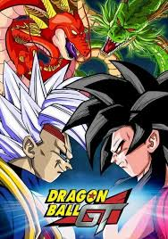
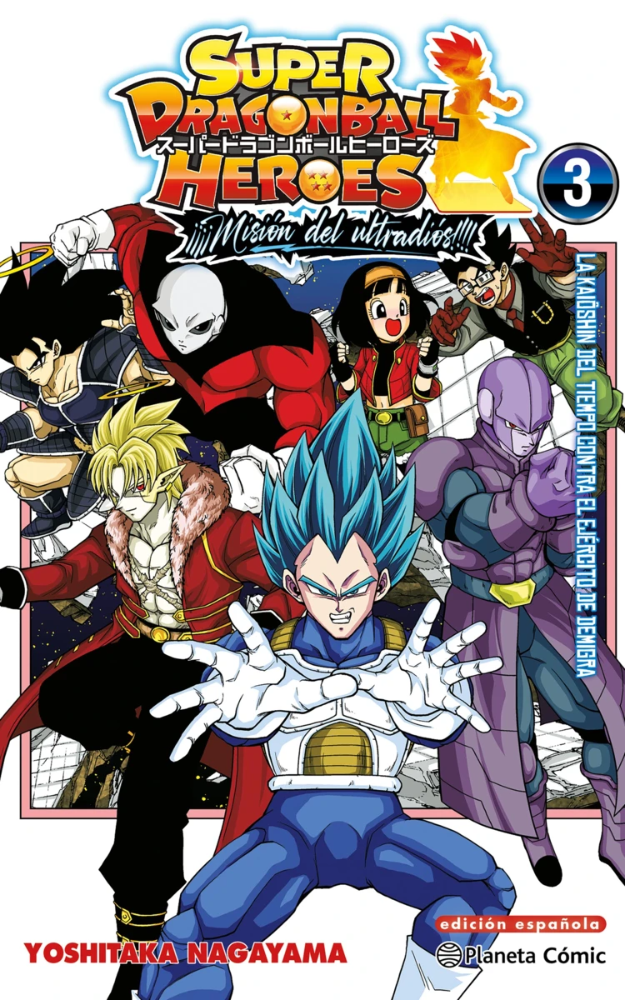

| Canónicas |
|
| Dragon Ball narra la infancia de Gokú un niño fuerte con cola mientras busca las mágicas Esferas del Dragón junto a Bulma Entrena con el Maestro Roshi compite en el Torneo de Artes Marciales y derrota al malvado Piccolo Daimaku aprendiendo a ser el guerrero que protegerá la Tierra. |
 |
| Dragon Ball Z sigue a Gokú adulto revelando su origen Saiyajin y debe defender la Tierra de invasores como Vegeta el tirano espacial Freezer y las amenazas de Cell y el monstruo mágico Majin Buu La serie se enfoca en batallas épicas y en las transformaciones Super Saiyajin por el destino del universo. |
 |
| Dragon Ball Super se sitúa en la paz tras Buu donde Gokú y Vegeta alcanzan el poder de los Dioses de la Destrucción Enfrentan a Beerus un Freezer resucitado y exploran otros universos participando en el Torneo de Poder para salvar su realidad con nuevas transformaciones divinas. |
 |
| Proyectos secundarios |
|
Dragon Ball GT (No Canónica) arranca cuando Gokú es convertido en niño y viaja por el espacio buscando las Esferas de Estrella Negra Luego enfrenta al parásito Baby y a los Dragones Malignos producto del mal uso de las esferas Es la única serie en presentar la forma Super Saiyajin 4. |
 |
| Dragon Ball Daima (Próxima Serie) presenta una nueva aventura donde una conspiración mágica desconocida transforma a Gokú y a casi todos sus amigos en niños forzándolos a emprender una aventura para revertir el hechizo La trama está supervisada por Akira Toriyama. |
 |
| Super Dragon Ball Heroes (Promocional) es una serie de animación no canónica que promueve el videojuego arcade Presenta a los personajes de la saga en batallas multiversales con transformaciones exageradas y crossovers incluyendo a Goku Xeno y la versión malvada de Goku Black y el Torneo del Espacio-Tiempo. |
 |